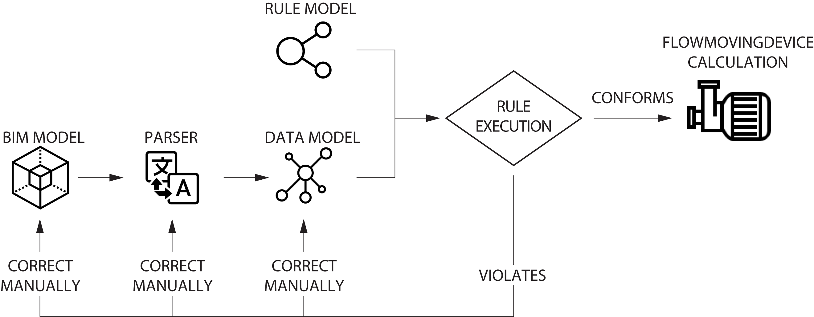
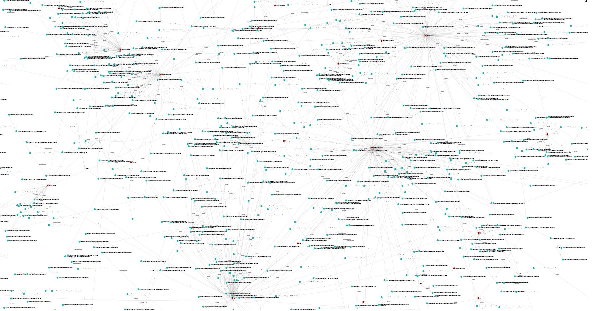
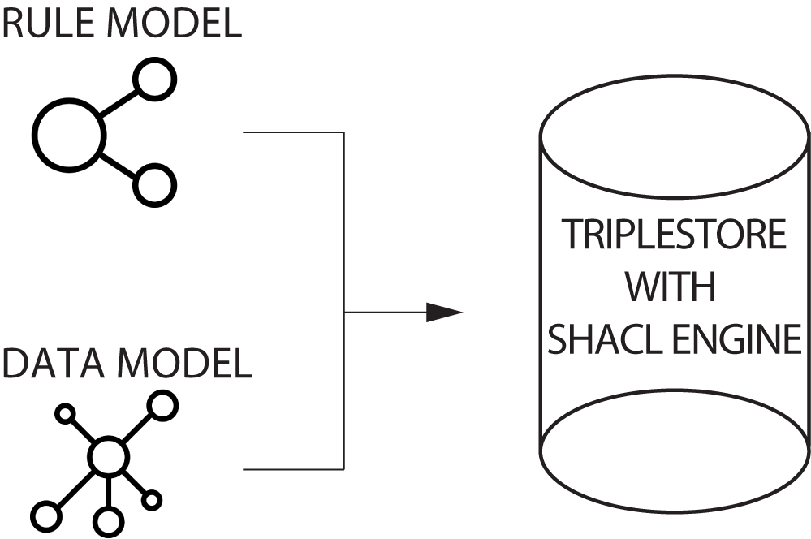
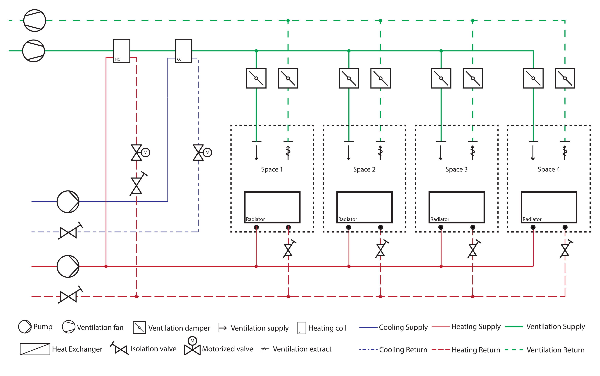
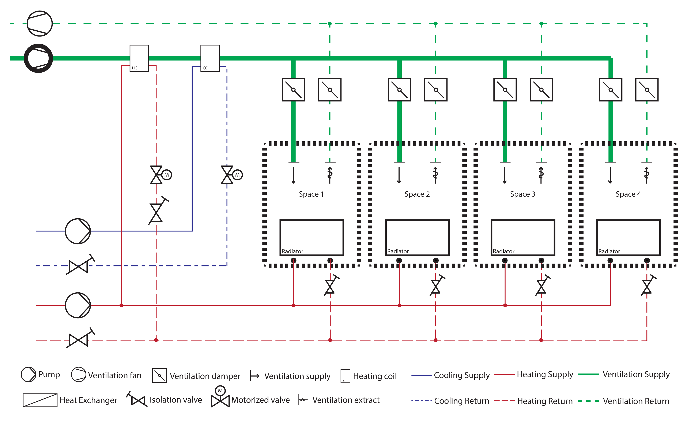
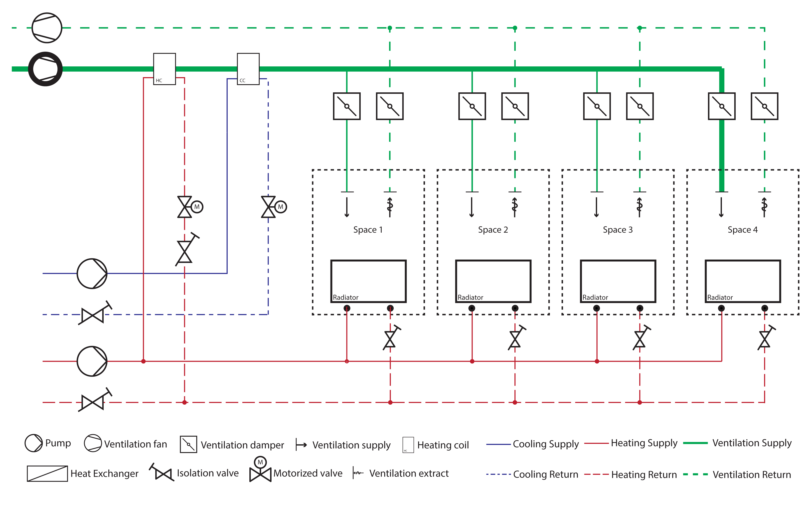

Applications of semantics
Agenda
- Current state of BIM and how to improve it
- Towards a modular and extendable data representation 🚀
- The vision of BIM bots 🤖
- Automated compliance checking 📜🚨
- Interactive demos along the way 🤗 so you don't get bored 🥱
Current state of BIM and how to improve it
"Our industry works in a document-centric manner rather than a data-centric one"
"Exchange of BIM-data as files makes data integration impossible"
"We need to switch from Today's monolitic nature of BIM to a network based one"
So how do we do this?
The idea is to use the existing infrastructure of the World Wide Web to mediate a distributed, network-based BIM
Web of documents
Web of data
Data is stored and hosted by the stakeholder who generated it and is responsible for it
Data can be shared with authenticated people or be made publicly available
The model data can be extended with Linked Open Data (product- and material properties, IoT, GIS)
Even the schemas are distributed, and can therefore extend one another
Current situation: Open standards in isolated closed worlds
Linked data benefit: Standards use, extend and refer to one another
A modular and extendable building representation
BOT: The Building Topology Ontology
7 classes
bot:Zone
bot:Element
bot:Interface
Extending BOT
The vision of BIM bots 🤖
Increasing Building Information
How do we ensure the data quality in BIM models?
The 4-step Compliance Checking Method

C. Eastman, J. min Lee, Y. suk Jeong, J. kook Lee, Automatic rule-based checking of
building designs (2009)
Rule interpretation
Definition: Human-readable rules are converted into a machine-interpretable format, also known as the rule model.
Building model preparation
Definition: Building information is converted into a machine-readable format, also known as the data model.
Rule execution
Definition: The data model is validated against the rule model.
Reporting
Definition: A validation report describing whether the data model has passed or violated any constraints.
Lets try to implement the validation method to the HVAC domain in a semantic web context!
The Case

Building model Preperation
Rule interpretation
Rule execution
Reporting
Reporting
C. Eastman, J. min Lee, Y. suk Jeong, J. kook Lee, Automatic rule-based checking of
building designs (2009)
A semantic and expressive rule language

Expressing an HVAC rules explicitly
fsosh:PipeComponsition
a sh:NodeShape;
sh:nodeKind sh:IRI ;
sh:targetClass fpo:Pipe ;
sh:property [
sh:path fso:hasPort ;
sh:nodeKind sh:IRI ;
sh:class fpo:Port ;
sh:minCount 2;
sh:maxCount 2;
sh:message "A pipe must have exactly two flow ports"
];
//... the shape continues
Expressing an HVAC rules implicitly
fsosh:PipeMaxPressureDrop
a sh:NodeShape;
sh:nodeKind sh:IRI ;
sh:targetClass fpo:Pipe ;
sh:sparql [
a sh:sh:SPARQLConstraint ;
sh:message "The pressure drop for a pipe shall not exceed 100 Pa/m";
sh:prefixes (fpo: fso: inst:) ;
sh:select """
PREFIX fso: http://w3id.org/fso#
PREFIX fpo: http://w3id.org/fpo#
PREFIX inst: https//example.com/inst#
SELECT ?this ?value
WHERE {
?this a fpo:Pipe .
?this fpo:length/fpo:value ?length .
?this fso:hasPort ?port .
?port fpo:flowDirection/fpo:value "Out" .
?port fpo:pressureDrop/fpo:value ?pressureDrop .
BIND ((?pressureDrop / ?length) AS ?value) .
FILTER (?value > 100)
}
""" ] .
Expressing an HVAC rules by inference
fsosh:PipeSizingPex
sh:NodeShape ;
sh:targetClass fpo:Pipe ;
sh:rule [
a sh:SPARQLRule ;
sh:condition fsosh:PipeMaxPressureDrop ;
sh:prefixes (fpo: fso: ex: ) ;
sh:construct """
CONSTRUCT {?diameter fpo:inferredValue ?newDiameter}
WHERE {
?this a fpo:Pipe .
?this fpo:materialType/fpo:value "PEX" .
?this fso:hasPort ?port .
?port fpo:outerDiameter ?diameter .
?diameter fpo:value ?actualOuterDiameter .
BIND (
IF(?actualOuterDiameter = 0.012, 0.015,
IF(?actualOuterDiameter = 0.015, 0.018,
IF(?actualOuterDiameter = 0.018, 0.020,
IF(?actualOuterDiameter = 0.020, 0.022,
IF(?actualOuterDiameter = 0.022, 0.028,
IF(?actualOuterDiameter = 0.028, 0.032,
IF(?actualOuterDiameter = 0.032, 0.040,
IF(?actualOuterDiameter = 0.040, 0.050,
?actualOuterDiameter
)))))))) AS ?newDiameter)
}
"""] .
C. Eastman, J. min Lee, Y. suk Jeong, J. kook Lee, Automatic rule-based checking of
building designs (2009)
The BIM model

The Parser
//Get all pipes
FilteredElementCollector pipeCollector = new FilteredElementCollector(doc);
ICollection pipes = pipeCollector.OfClass(typeof(Pipe)).ToElements();
List pipeList = new List();
foreach (Pipe component in pipeCollector){
Pipe w = component as Pipe;
//Type
string componentID = component.UniqueId.ToString();
sb.Append($"inst:{componentID} a fpo:Pipe ." + "\n");
}
The Data Model
10139 facts

C. Eastman, J. min Lee, Y. suk Jeong, J. kook Lee, Automatic rule-based checking of
building designs (2009)

C. Eastman, J. min Lee, Y. suk Jeong, J. kook Lee, Automatic rule-based checking of
building designs (2009)
Conforming validation report
{
"@context": {
"sh": "http://www.w3.org/ns/shacl#"
},
"@id": "_:b0",
"@type": "sh:ValidationReport",
"sh:conforms": true
}
Violating validation report
{
"@context": {
"sh": "http://www.w3.org/ns/shacl#",
"fso": "http://w3id.org/fso#"
},
"@type": "sh:ValidationReport",
"sh:conforms": false,
"sh:result": [
{
"@type": "sh:ValidationResult",
"sh:resultMessage": "A fan must have exactly two flow ports",
"sh:focusNode": {
"@id": "https://example.com/inst#363b06c9-b642-4ae9-8377-2bc412234dc5-001450df"
},
"sh:resultPath": {
"@id": "fso:hasPort"
},
"sh:resultSeverity": {
"@id": "sh:Violation"
},
"sh:sourceConstraintComponent": {
"@id": "sh:MaxCountConstraintComponent"
},
"sh:sourceShape": {
"@id": "_:b3"
}
},
{
"@type": "sh:ValidationResult",
"sh:resultMessage": "A fan must have exactly two flow ports",
"sh:focusNode": {
"@id": "https://example.com/inst#363b06c9-b642-4ae9-8377-2bc412234dc5-0014535a"
},
"sh:resultPath": {
"@id": "fso:hasPort"
},
"sh:resultSeverity": {
"@id": "sh:Violation"
},
"sh:sourceConstraintComponent": {
"@id": "sh:MaxCountConstraintComponent"
},
"sh:sourceShape": {
"@id": "_:b3"
}
}
]
}
We have the necessary information to calculate the flow rate and head of each flow moving devices in the data model
PI-Diagram
Flow rate of an flow moving device
Head of an flow moving device
Case Demo
Thank you for your attention!
Reach out if you have questions/comments!
Mads Holten Rasmussen | mhra@niras.dk
Ali Kücükavci | alkc@cowi.com